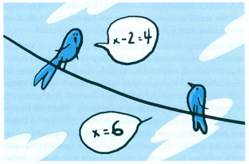
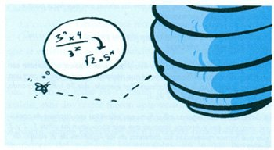

Un famoso escritor y pensador del siglo XX llamado Aldous Huxley pronunció una frase famosa: «Hay tres tipos de inteligencia: la humana, la animal y la militar». En este artículo hablaremos de la inteligencia animal y, en particular, en la capacidad de los animales para contar cantidades, y para utilizar números en otras actividades.El conocimiento de la conducta animal avanza a pasos agigantados. Hasta comienzos del siglo XIX, casi a ningún científico se le ocurría estudiarla con atención. Había una barrera que impedía considerar que los animales pudieran tener algún tipo de inteligencia. Se creía que solo tenían instinto, pero no inteligencia. Se hablaba de ellos como «animales irracionales» como seres sin capacidad de razonar.
Con el tiempo se ha comprobado que los animales poseen capacidades asombrosas. Los delfines se comunican entre sí con un lenguaje muy rico. Algunos primates son capaces de utilizar herramientas y, lo que es más importante, aprenden a manejarlas a partir de los ejemplos de sus padres o cuidadores. Los caballos poseen una especie de mapa mental de su territorio. Las ovejas tienen la facultad de reconocer y recordar el rostro de sus congéneres en un rebaño. Y algunos perros debidamente entrenados parecen capaces de comprender palabras humanas. Resulta indiscutible que la inteligencia animal existe, aunque en ocasiones tendemos a medirla utilizando criterios excesivamente humanos.
Hace mucho tiempo, en algunos circos estuvieron de moda exhibiciones con perros o caballos de los que se decía que poseían asombrosas capacidades matemáticas. Por medio de relinchos, ladridos o pataleos, resolvían correctamente sencillos problemas aritméticos. Algunos de estos animales, y sobre todo sus dueños, llegaron a hacer fortuna. Sin embargo, parece demostrado que detrás de esas exhibiciones no había más que un entrenamiento en el que los animales respondían a sutiles señales enviadas por sus adiestradores.
Pero dejando aparte estos espectáculos, a los seres humanos siempre nos han asombrado ciertas habilidades de los animales realizadas en ambientes naturales. Por ejemplo, la capacidad de ciertas arañas de tejer telas geométricamente armoniosas. O la de las abejas para construir panales hexagonales. O la de las palomas mensajeras para orientarse en la oscuridad. O la de loros, capaces de recitar una lista de números… ¿Supone esto que los animales utilizan conscientemente números, relaciones, cálculos, operaciones…?
Al menos, algunos animales cuentan
Algunos investigadores han dedicado parte de sus vidas a estudiar, por ejemplo, la capacidad de contar de cornejas, palomas, cuervos o papagayos. Con experimentos en los que no había adiestramiento previo, comprobaron que algunas aves eran capaces de relacionar una caja con un número determinado de manchas con una llave que tenía el mismo número de manchas, lo que significaba que el animal podía establecer una correspondencia entre cantidades.
Se comprobó así que algunos pájaros tienen la habilidad de manejar números sin nombre y que esta habilidad variaba según las especies. Las palomas eran capaces de contar hasta cinco, las cornejas hasta seis y los papagayos y cuervos hasta siete.
Iguales investigaciones se han llevado a cabo con monos, colocados ante un monitor que muestra un número determinado de puntos, a los que se debe responder con la misma cantidad de pulsaciones. Los macacos obtuvieron notables resultados, aunque los puntos cambiasen de posición, color o tamaño. Además, se observó que la actividad cerebral de estos animales variaba según se mostraran números bajos u otros más altos, activándose unas u otras neuronas de la región frontal.
Muchos experimentos realizados con animales, y en particular con primates, tratan de conocer no solo las aptitudes numéricas del animal, sino también de saber cómo los seres humanos desarrollaron las nociones de número, cantidad, orden y operación. No hay que olvidar que lo que sabemos de matemáticas es resultado de un aprendizaje acumulativo. Hubo un tiempo (¿hace cincuenta mil, quinientos mil años…?) en que los humanos probablemente no poseían más capacidades numéricas que las de los actuales chimpancés. Todavía hoy, en tribus humanas muy aisladas, las palabras que designan cantidades quedan reducidas a «una», «dos» y «muchas»; los siguientes números los designan como «uno-dos» y «dos-dos» y más allá de cinco les resulta algo casi tan inconcebible como a nosotros nos parece «un millón de billones».
Limitaciones humanas
Los ojos y los cerebros de mamíferos y aves parecen capaces de apreciar la cantidad como una propiedad más del entorno, tales como el color o el movimiento. Al parecer, esa capacidad innata no va más allá de cuatro o siete unidades, según especies. Experimentos realizados con personas, a quienes se presentan un número determinado de círculos en cartulinas y se les exige dar respuesta de un rápido vistazo llevan a pensar que en nuestro caso ese límite es de siete; más allá de eso, no sabemos discriminar entre nueve y diez, y dar una respuesta precisa exige contar. Es decir, visualizar de uno en uno y asignar una palabra a cada elemento.
O sea: necesitamos un lenguaje. Pero incluso con un lenguaje resulta fatigoso asociar una cantidad con un número de un vistazo. El sistema de numeración romano, por ejemplo, preveía las limitaciones de nuestro cerebro y, por ello, la cantidad «siete» es representada como VII y no como IIIIIII.
Estas limitaciones tienen importancia en el idioma hablado. Los romanos, por ejemplo, solían asignar a sus hijos nombres propios hasta el cuarto. A partir del quinto, los nombres eran Quintus, Sextus, Septimus, Octavius… Igual ocurría con los nombres de los meses. Hay que recordar que septiembre y octubre representaban los meses siete y ocho… y así hasta el diez, que era nombrado como diciembre.
Un proceso más complejo que visualizar un número es realizar y representar una operación. De nuevo, volviendo al reino animal, se sabe que algunos insectos alimentan a sus larvas con cinco víctimas, si la larva es macho, y con el doble, si son hembras. El cuco, por ejemplo, que pone sus huevos en los nidos de otras aves, empuja fuera del nido un huevo o dos, dependiendo de su puesta. Estas operaciones podrían ser representadas matemáticamente, aunque es obvio que los animales no tienen idea de los símbolos y operaciones asignadas.
Animales como los primates son capaces de analizar bandejas con piezas de chocolate y elegir la que representa una mayor ventaja, como si fueran capaces de realizar los cálculos 4+4 y 5+2, y escoger el mejor resultado. Sin embargo, no está claro si los animales eligen en función del volumen y la superficie ocupados por la comida o por un análisis de cada uno de los elementos, reunidos en dos conjuntos distintos, uno más numeroso que otro, lo que supondría una capacidad de abstracción mayor.
Algunos experimentos realizados con el reconocimiento de cifras no ofrecen resultados concluyentes y, en cualquier caso, están basados en un aprendizaje, igual que el que podamos realizar los humanos.

Matemáticas en la naturaleza
Muchas veces se ha elogiado la capacidad de arácnidos, insectos o pájaros a la hora de elaborar telas, colmenas o nidos geométricamente perfectos. Este hecho, que muchas veces se ha invocado como una muestra de la sabiduría de la naturaleza, no representa ninguna hazaña que tenga que ver con los números.
Nuestro asombro puede estar relacionado con la transmisión genética, pero no con las matemáticas. Que una araña teja el mismo tipo de telas que su madre resulta admirable por lo que se refiere al conocimiento innato. No obstante, una araña no tiene ningún propósito de edificar una bella trampa, sino una trampa útil, realizada con el mínimo de energía y de materiales y el máximo de eficacia.
Un ejemplo claro es el de los panales de abeja. Durante siglos se ha admirado que tengan una estructura hexagonal tan perfecta. Es cierto que el prisma hexagonal es la estructura más apta para llenar un espacio y aprovecharlo al máximo pero, para desánimo de los admiradores de abejas, estas no construyen panales hexagonales, sino cilíndricos. Cualquiera puede comprobar que si se comprimen cilindros elásticos, unos contra otros, aparecerán prismas hexagonales. Y, por otro lado, la sección circular es la más razonable de construir cuando una cabeza (o unas manos) intentan apilar materiales alrededor de uno mismo. De nuevo, no hay propósito, sino eficacia. Igual se podría decir de los nidos de las aves martillo, que construyen esferas de casi dos metros de diámetro, ya que la esfera es la curva que encierra el menor volumen.
La naturaleza está llena de ejemplos que muestran un orden, desde los cristales cúbicos de la pirita hasta las espirales de las conchas de los moluscos. A través de nuestro aprendizaje, y gracias al inmenso poder de nuestro cerebro, los humanos hemos aprendido no solo a contar sino a apreciar formas y estructuras. Las ondulaciones que produce una serpiente al reptar, las formas poligonales del caparazón de una tortuga, la superficie ovalada de un huevo, las hélices de las que están provistas algunas hojas… constituyen una muestra de la armonía y eficacia de los seres vivos.
La capacidad de percepción numérica de los animales de cerebro más desarrollado no parece superior a la que pueda tener un bebé humano de unos dos años. El fantástico recorrido desde las primeras ideas de cantidad hasta la construcción de números, propiedades, operaciones, relaciones, formas, estructuras… es algo que debemos a nuestro cerebro y a nuestro potencial de aprendizaje.
En resumen, en lo referido a lo numérico, se puede afirmar que existe un abismo entre la inteligencia humana y la animal, aunque puede pensarse que buena parte de lo que podemos conocer sobre los números tiene que ver con el aprendizaje.